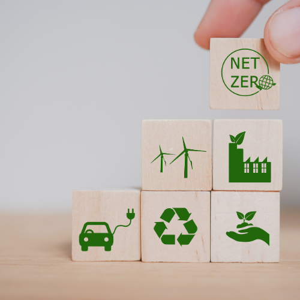

Création de Site Internet Éco-responsable : Un Web Plus Vert
Le monde numérique occupe une place de plus en plus prépondérante dans notre vie quotidienne. De la communication aux transactions commerciales, en passant par l’accès à l’information, le web est devenu une partie intégrante de notre existence. Cependant, cette omniprésence a un coût environnemental important. La création de sites internet éco-responsables est une réponse à ce défi écologique croissant.
Sommaire :
I. L’impact environnemental du web
II. Les principes de la création de site internet éco-responsable
II.I 1. Conception légère
II.II 2. Hébergement vert
II.III 3. Optimisation des images
II.IV 4. Minimisation des requêtes
II.V 5. Utilisation de l’énergie verte
III. Les avantages de la création de site internet éco-responsable
III.I 1. Réduction de l’empreinte carbone
III.II 2. Amélioration de la performance
III.III 3. Réduction des coûts
IV. Les défis de la création de sites internet éco-responsables
IV.I 1. Conscience et éducation
IV.II 2. Coût initial
IV.III 3. Compromis entre performance et durabilité
IV.IV 4. Normes et réglementations
V. L’avenir de la création de sites internet éco-responsables
VI. FAQ : Sites Internet Éco-responsables
I. L’impact environnemental du web
L’expansion rapide du web a conduit à une augmentation spectaculaire de la consommation d’énergie et de la production de gaz à effet de serre. Les centres de données qui hébergent les sites web nécessitent une alimentation électrique constante, ce qui a des répercussions sur la consommation d’énergie et l’émission de carbone. De plus, la fabrication et l’élimination des dispositifs électroniques utilisés pour accéder au web ont également un impact environnemental considérable.
Pour en savoir plus sur les émissions de carbone liées à l’utilisation du web, consultez les données de l’Agence de l’Environnement et de la Maîtrise de l’Énergie (ADEME).
II. Les principes de la création de site internet éco-responsable
La création de sites internet éco-responsables vise à minimiser l’impact environnemental du web tout en offrant une expérience de qualité aux utilisateurs. Voici quelques principes clés :
1. Conception légère
La conception de sites internet éco-responsables favorise la légèreté. Cela signifie l’utilisation de codes optimisés, la compression des images et des fichiers, et la minimisation des scripts inutiles. Une conception légère permet aux pages de se charger plus rapidement, réduisant ainsi la consommation d’énergie pour leur affichage.
Découvrez comment optimiser votre site web pour une meilleure performance avec les conseils de Robin votre expert en création.
2. Hébergement vert
Le choix d’un hébergeur web respectueux de l’environnement est essentiel. Certains hébergeurs s’engagent à utiliser des sources d’énergie renouvelable pour alimenter leurs serveurs, réduisant ainsi l’empreinte carbone des sites hébergés.
3. Optimisation des images
Les images sont souvent responsables de la lenteur des sites web. L’optimisation des images en réduisant leur taille sans compromettre leur qualité peut grandement contribuer à rendre un site plus éco-responsable.
Pour en savoir plus sur l’optimisation des images, visitez Google PageSpeed Insights.
4. Minimisation des requêtes
Chaque élément sur une page web nécessite une requête au serveur. Réduire le nombre de requêtes en combinant des fichiers, en utilisant des CSS et des scripts minifiés, et en évitant les éléments superflus permet de réduire la consommation d’énergie nécessaire au chargement d’une page.
5. Utilisation de l’énergie verte
Si vous possédez votre propre infrastructure serveur, envisagez d’utiliser de l’énergie verte, comme l’énergie solaire ou éolienne, pour alimenter vos serveurs. Cela contribue à réduire votre empreinte carbone.
III. Les avantages de la création de site internet éco-responsable
La création de sites internet éco-responsables comporte de nombreux avantages :
1. Réduction de l’empreinte carbone
En réduisant la consommation d’énergie et en utilisant des sources d’énergie renouvelable, les sites web éco-responsables contribuent à réduire leur empreinte carbone, contribuant ainsi à lutter contre le changement climatique.
2. Amélioration de la performance
Une conception légère et optimisée signifie des temps de chargement plus rapides, ce qui améliore l’expérience utilisateur. Les visiteurs sont plus susceptibles de rester sur un site qui se charge rapidement.
3. Réduction des coûts
La réduction de la consommation d’énergie et des ressources nécessaires à la gestion d’un site web peut entraîner des économies de coûts significatives à long terme.
IV. Les défis de la création de sites internet éco-responsables
Bien que la création de sites internet éco-responsables présente de nombreux avantages, elle comporte également des défis et des obstacles à surmonter :
1. Conscience et éducation
L’un des principaux défis réside dans la sensibilisation et l’éducation des concepteurs de sites web, des propriétaires d’entreprises et des utilisateurs finaux. Beaucoup ne sont pas conscients de l’impact environnemental du web ni des moyens de le réduire.
2. Coût initial
La mise en œuvre de certaines pratiques éco-responsables, comme l’utilisation de serveurs alimentés par des énergies renouvelables, peut entraîner un coût initial plus élevé. Cependant, ces coûts peuvent être compensés par des économies à long terme.
3. Compromis entre performance et durabilité
Il peut parfois être difficile de trouver un équilibre entre la performance du site web et sa durabilité environnementale. Certaines optimisations, comme la réduction drastique des éléments graphiques, peuvent affecter négativement l’expérience utilisateur.
4. Normes et réglementations
Le manque de normes et de réglementations spécifiques concernant les sites internet éco-responsables peut rendre difficile la mesure et la vérification de leur empreinte carbone. Cependant, des efforts sont en cours pour élaborer des directives et des certifications dans ce domaine.
V. L’avenir de la création de sites internet éco-responsables
Malgré les défis, la création de sites internet éco-responsables est appelée à devenir la norme plutôt que l’exception. De plus en plus d’entreprises et d’individus reconnaissent l’importance de réduire leur impact sur l’environnement, et le web n’échappe pas à cette tendance.
De nouvelles technologies, telles que les outils d’analyse de l’empreinte carbone des sites web, émergent pour aider les développeurs à mesurer et à réduire leur impact environnemental. Les efforts pour rendre le web plus durable se multiplient, et des communautés de pratiques se forment pour partager les meilleures pratiques et les solutions.